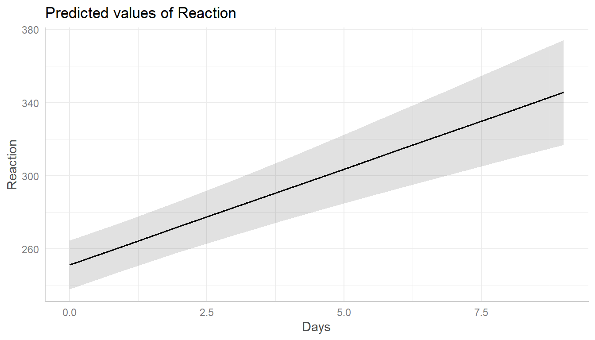
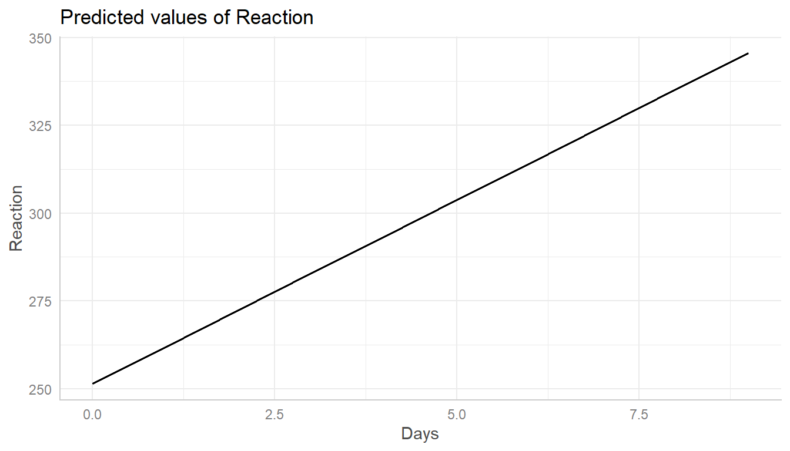
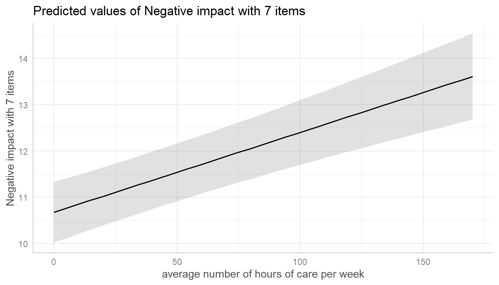
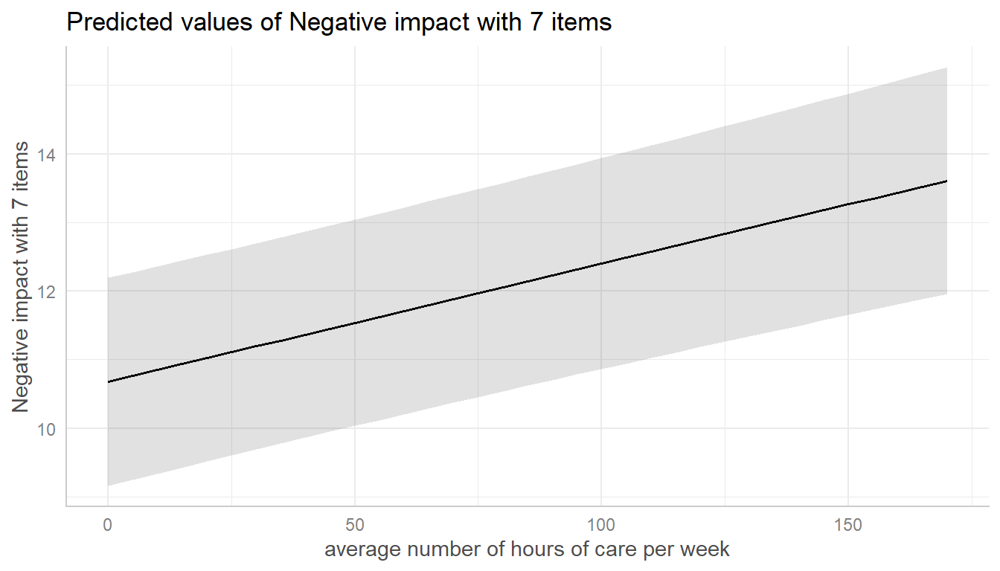
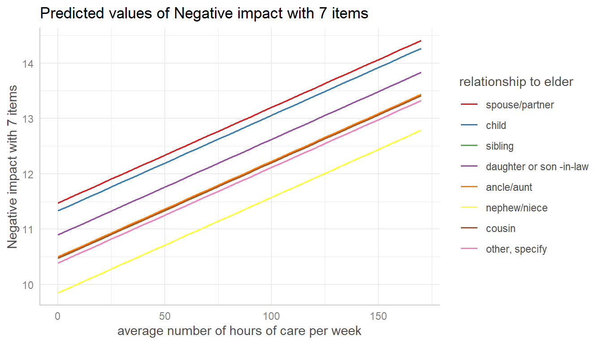
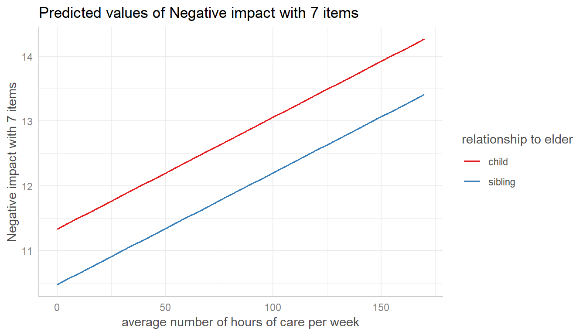
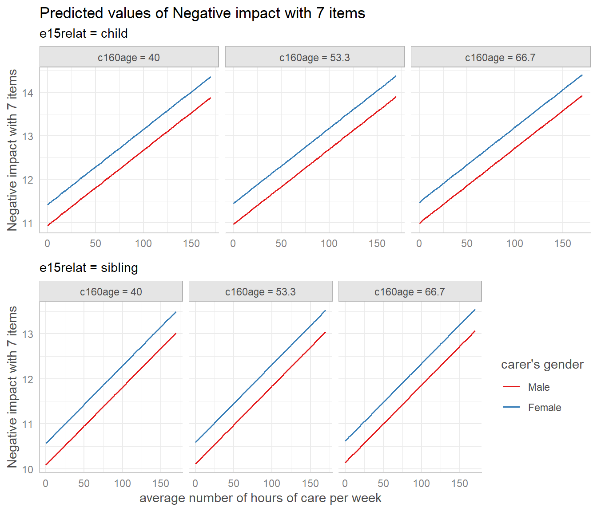
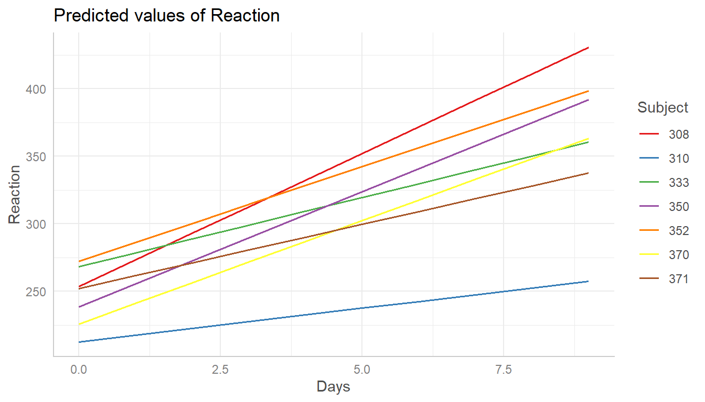
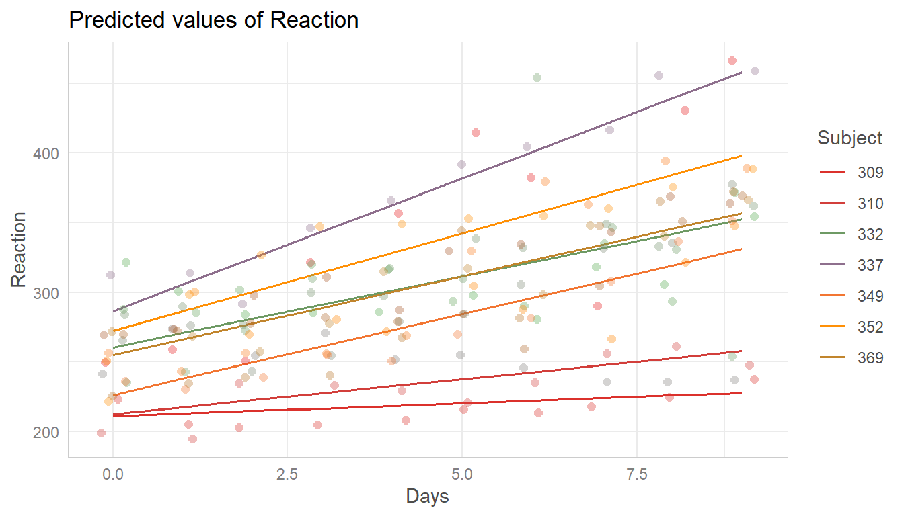

introduction_randomeffects.RmdThis vignette shows how to calculate marginal effects that take the random-effect variances for mixed models into account.
Basically, the type of predictions, i.e. whether to account for the uncertainty of random effects or not, can be set with the type-argument. The default, type = "fe", means that predictions are on the population-level and do not account for the random effect variances. Intervals are confidence intervals for the predicted values.
library(ggeffects)
library(lme4)
data(sleepstudy)
m <- lmer(Reaction ~ Days + (1 + Days | Subject), data = sleepstudy)
pr <- ggpredict(m, "Days")
pr
#>
#> # Predicted values of Reaction
#> # x = Days
#>
#> x predicted std.error conf.low conf.high
#> 0 251.405 6.824 238.031 264.779
#> 1 261.872 6.786 248.572 275.173
#> 2 272.340 7.094 258.436 286.243
#> 3 282.807 7.705 267.705 297.909
#> 5 303.742 9.582 284.962 322.521
#> 6 314.209 10.733 293.173 335.245
#> 7 324.676 11.974 301.208 348.144
#> 9 345.611 14.630 316.936 374.285
#>
#> Adjusted for:
#> * Subject = 0 (population-level)
plot(pr)
When type = "re", the predicted values are still on the population-level. However, the random effect variances are taken into account, meaning that the intervals are actually prediction intervals and become larger. More technically speaking, type = "re" accounts for the uncertainty of the fixed effects conditional on the estimates of the random-effect variances and conditional modes (BLUPs).
The random-effect variance is the mean random-effect variance. Calculation is based on the proposal from Johnson et al. 2014, which is also implemented in functions like performance::r2() or insight::get_variance() to get r-squared values or random effect variances for mixed models with more complex random effects structures.
As can be seen, compared to the previous example with type = "fe", predicted values are identical (both on the population-level). However, standard errors, and thus the resulting confidence (or prediction) intervals are much larger .
pr <- ggpredict(m, "Days", type = "re")
pr
#>
#> # Predicted values of Reaction
#> # x = Days
#>
#> x predicted std.error conf.low conf.high
#> 0 251.405 41.771 169.536 333.274
#> 1 261.872 41.765 180.015 343.730
#> 2 272.340 41.816 190.382 354.297
#> 3 282.807 41.924 200.638 364.976
#> 5 303.742 42.309 220.818 386.665
#> 6 314.209 42.584 230.745 397.673
#> 7 324.676 42.914 240.567 408.786
#> 9 345.611 43.730 259.902 431.319
#>
#> Adjusted for:
#> * Subject = 0 (population-level)
plot(pr)
The reason why both type = "fe" and type = "re" return predictions at population-level is because ggpredict() returns predicted values of the response at specific levels of given model predictors, which are defined in the data frame that is passed to the newdata-argument (of predict()). The data frame requires data from all model terms, including random effect terms. This again requires to choose certain levels or values also for each random effect term, or to set those terms to zero or NA (for population-level). Since there is no general rule, which level(s) of random effect terms to choose in order to represent the random effects structure in the data, using the population-level seems the most clear and consistent approach.
To get predicted values for a specific level of the random effect term, simply define this level in the condition-argument.
ggpredict(m, "Days", type = "re", condition = c(Subject = 330))
#>
#> # Predicted values of Reaction
#> # x = Days
#>
#> x predicted std.error conf.low conf.high
#> 0 275.094 41.771 193.225 356.963
#> 1 280.747 41.765 198.890 362.604
#> 2 286.400 41.816 204.443 368.358
#> 3 292.053 41.924 209.884 374.222
#> 5 303.360 42.309 220.436 386.284
#> 6 309.013 42.584 225.549 392.477
#> 7 314.666 42.914 230.556 398.776
#> 9 325.972 43.730 240.264 411.681Finally, it is possible to obtain predicted values by simulating from the model, where predictions are based on simulate().
ggpredict(m, "Days", type = "sim")
#>
#> # Predicted values of Reaction
#> # x = Days
#>
#> x predicted conf.low conf.high
#> 0 251.059 201.301 300.210
#> 1 261.752 211.462 311.305
#> 2 272.277 223.085 321.490
#> 3 282.963 232.353 332.561
#> 5 303.714 253.775 353.313
#> 6 314.416 263.946 365.050
#> 7 324.562 275.358 375.408
#> 9 345.686 295.357 396.116
#>
#> Adjusted for:
#> * Subject = 0 (population-level)For zero-inflated mixed effects models, typically fitted with the glmmTMB or GLMMadaptive packages, predicted values can be conditioned on
type = "fe")type = "fe.zi")type = "re")type = "re.zi")type = "sim")library(glmmTMB)
data(Salamanders)
m <- glmmTMB(
count ~ spp + mined + (1 | site),
ziformula = ~ spp + mined,
family = truncated_poisson,
data = Salamanders
)Similar to mixed models without zero-inflation component, type = "fe" and type = "re" for glmmTMB-models (with zero-inflation) both return predictions on the population-level, where the latter option accounts for the uncertainty of the random effects. In short, predict(..., type = "link") is called (however, predicted values are back-transformed to the response scale).
ggpredict(m, "spp")
#>
#> # Predicted counts of count
#> # x = spp
#>
#> x predicted conf.low conf.high
#> GP 0.935 0.624 1.400
#> PR 0.555 0.304 1.015
#> DM 1.171 0.804 1.704
#> EC-A 0.769 0.480 1.233
#> EC-L 1.786 1.250 2.550
#> DES-L 1.713 1.200 2.445
#> DF 0.979 0.667 1.437
#>
#> Adjusted for:
#> * mined = yes
#> * site = NA (population-level)
ggpredict(m, "spp", type = "re")
#>
#> # Predicted counts of count
#> # x = spp
#>
#> x predicted conf.low conf.high
#> GP 0.935 0.510 1.714
#> PR 0.555 0.261 1.180
#> DM 1.171 0.650 2.107
#> EC-A 0.769 0.400 1.478
#> EC-L 1.786 1.004 3.175
#> DES-L 1.713 0.964 3.045
#> DF 0.979 0.541 1.772
#>
#> Adjusted for:
#> * mined = yes
#> * site = NA (population-level)For type = "fe.zi", the predicted response value is the expected value mu*(1-p) without conditioning on random effects. Since the zero inflation and the conditional model are working in “opposite directions”, a higher expected value for the zero inflation means a lower response, but a higher value for the conditional model means a higher response. While it is possible to calculate predicted values with predict(..., type = "response"), standard errors and confidence intervals can not be derived directly from the predict()-function. Thus, confidence intervals for type = "fe.zi" are based on quantiles of simulated draws from a multivariate normal distribution (see also Brooks et al. 2017, pp.391-392 for details).
ggpredict(m, "spp", type = "fe.zi")
#>
#> # Predicted counts of count
#> # x = spp
#>
#> x predicted std.error conf.low conf.high
#> GP 0.138 0.048 0.049 0.227
#> PR 0.017 0.009 0.000 0.035
#> DM 0.245 0.077 0.094 0.396
#> EC-A 0.042 0.019 0.005 0.078
#> EC-L 0.374 0.109 0.169 0.579
#> DES-L 0.433 0.124 0.179 0.687
#> DF 0.205 0.063 0.081 0.329
#>
#> Adjusted for:
#> * mined = yes
#> * site = NA (population-level)For type = "re.zi", the predicted response value is the expected value mu*(1-p), accounting for the random-effect variances. Intervals are calculated in the same way as for type = "fe.zi", except that the mean random effect variance is considered and thus prediction intervals rather than confidence intervals are returned.
ggpredict(m, "spp", type = "re.zi")
#>
#> # Predicted counts of count
#> # x = spp
#>
#> x predicted std.error conf.low conf.high
#> GP 0.138 0.235 0.032 0.354
#> PR 0.017 0.231 0.000 0.055
#> DM 0.245 0.243 0.061 0.619
#> EC-A 0.042 0.231 0.005 0.119
#> EC-L 0.374 0.257 0.095 0.941
#> DES-L 0.433 0.263 0.119 1.067
#> DF 0.205 0.239 0.052 0.517
#>
#> Adjusted for:
#> * mined = yes
#> * site = NA (population-level)Finally, it is possible to obtain predicted values by simulating from the model, where predictions are based on simulate() (see Brooks et al. 2017, pp.392-393 for details). To achieve this, use type = "sim".
ggpredict(m, "spp", type = "sim")
#>
#> # Predicted counts of count
#> # x = spp
#>
#> x predicted std.error conf.low conf.high
#> GP 1.087 1.290 0 4.196
#> PR 0.296 0.668 0 2.251
#> DM 1.516 1.547 0 5.262
#> EC-A 0.535 0.948 0 3.077
#> EC-L 2.193 2.109 0 7.067
#> DES-L 2.276 2.069 0 7.056
#> DF 1.316 1.364 0 4.654
#>
#> Adjusted for:
#> * mined = yes
#> * site = NA (population-level)Marginal effects can also be calculated for each group level in mixed models. Simply add the name of the related random effects term to the terms-argument, and set type = "re".
In the following example, we fit a linear mixed model and first simply plot the marginal effetcs, not conditioned on random-effect variances.
library(sjlabelled)
data(efc)
efc$e15relat <- as_label(efc$e15relat)
m <- lmer(neg_c_7 ~ c12hour + c160age + c161sex + (1 | e15relat), data = efc)
me <- ggpredict(m, terms = "c12hour")
plot(me)
Changing the type to type = "re" still returns population-level predictions by default. Recall that the major difference between type = "fe" and type = "re" is the uncertainty in the variance parameters. This leads to larger confidence intervals (i.e. prediction intervals) for marginal effects with type = "re".

To compute marginal effects for each grouping level, add the related random term to the terms-argument. In this case, confidence intervals are not calculated, but marginal effects are conditioned on each group level of the random effects.

Marginal effects, conditioned on random effects, can also be calculated for specific levels only. Add the related values into brackets after the variable name in the terms-argument.

The most complex plot in this scenario would be a term (c12hour) at certain values of two other terms (c161sex, c160age) for specific levels of random effects (e15relat), so we have four variables in the terms-argument.
me <- ggpredict(
m,
terms = c("c12hour", "c161sex", "c160age", "e15relat [child,sibling]"),
type = "re"
)
plot(me)
If the group factor has too many levels, you can also take a random sample of all possible levels and plot the marginal effects for this subsample of group levels. To do this, use term = "<groupfactor> [sample=n]".
set.seed(123)
m <- lmer(Reaction ~ Days + (1 + Days | Subject), data = sleepstudy)
me <- ggpredict(m, terms = c("Days", "Subject [sample=7]"), type = "re")
plot(me)
You can also add the observed data points for each group using add.data = TRUE.

Brooks ME, Kristensen K, Benthem KJ van, Magnusson A, Berg CW, Nielsen A, et al. glmmTMB Balances Speed and Flexibility Among Packages for Zero-inflated Generalized Linear Mixed Modeling. The R Journal. 2017;9: 378–400.
Johnson PC, O’Hara RB. 2014. Extension of Nakagawa & Schielzeth’s R2GLMM to random slopes models. Methods Ecol Evol, 5: 944-946. (doi: 10.1111/2041-210X.12225)